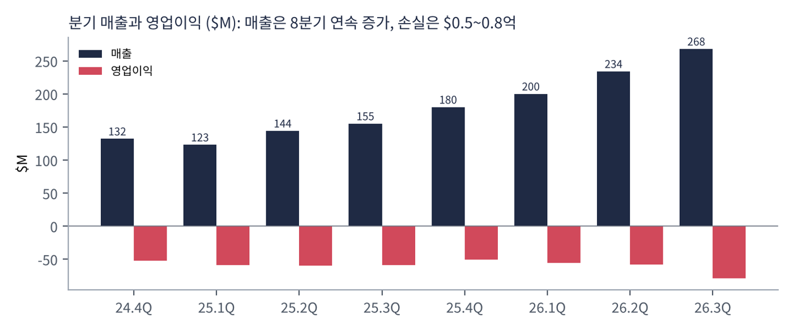
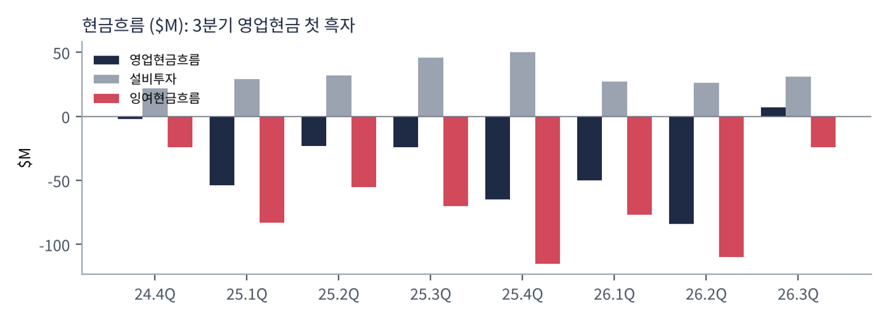
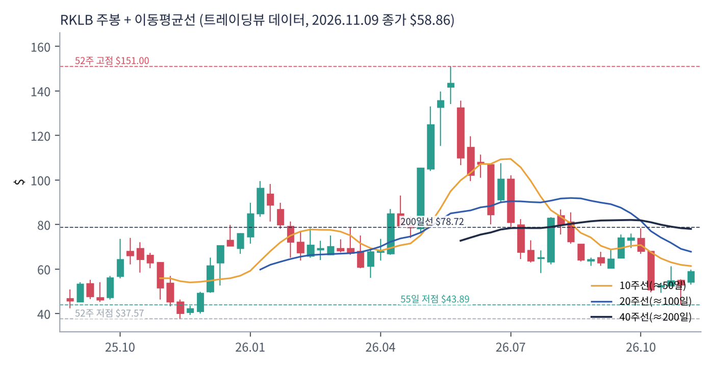
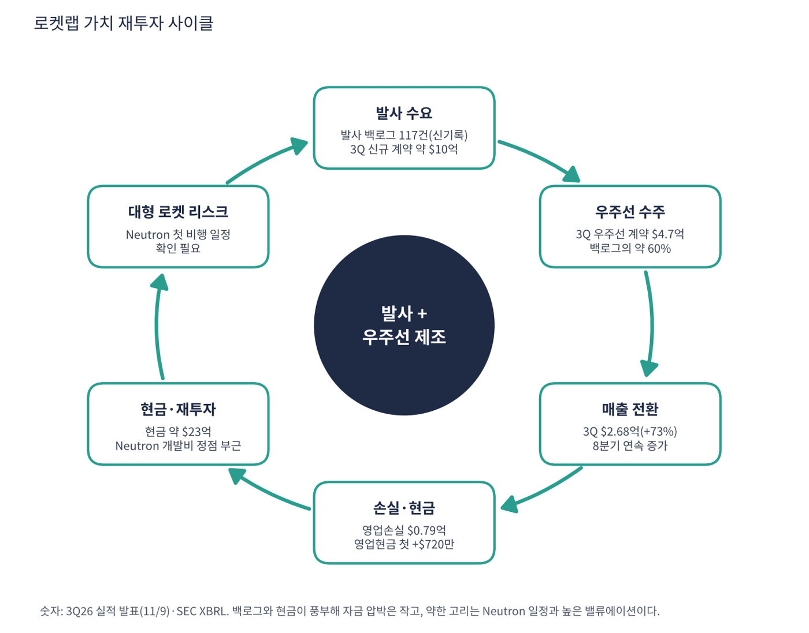

로켓랩은 소형 로켓 일렉트론으로 위성을 쏘아 올리는 발사 서비스와 위성·우주선 부품을 직접 만드는 우주 시스템 두 가지를 모두 하는 회사다. 스페이스X가 독점에 가까운 발사 시장에서 '스페이스X 다음 후보'로 꼽히며, 중형 재사용 로켓 뉴트론(Neutron)을 개발 중이다. 매출의 큰 부분이 아직 위성 제조(우주 시스템)이며 정부·방위 계약 비중이 높다.
| 항목 | 내용 |
|---|---|
| 종목 | Rocket Lab Corporation (RKLB) · NASDAQ · 우주 발사·위성 · 본사 캘리포니아주 롱비치 |
| 시가총액 | 약 $352억 · PER 적자 · P/S 43.4배(트레이딩뷰) · 11/9 종가 $58.86(+10.9%) |
| 최근 분기(2026.3Q, 11/9 발표) | 매출 $2.68억(+73%, 신기록), 영업손실 $0.79억, 순손실 $0.80억, 영업현금 +$720만(첫 흑자) |
| 백로그 | 약 $35.7억(전 분기 대비 +52%). 발사 백로그 117건, 3Q 신규 발사 계약 약 $10억·우주선 $4.7억 |
| 뉴트론 | 3Q에 $5.15억 계약(군집 위성 운영사), 백로그 16개 임무, 기본 발사 가격 $7,000만. 첫 비행 일정 확인 필요 |
| 다음 실적 | 4Q26 실적: 2027년 2~3월 예정(확인 필요) |
| 직책 | 인물 | 역할·특징 |
|---|---|---|
| 창업자·CEO | 피터 벡 경 | 뉴질랜드 출신 창업자. 소형 발사체로 시작해 위성 제조·방위 사업으로 확장. 뉴트론을 직접 챙김 |
| CFO | 애덤 스파이스 | 백로그·총이익률·현금 소모를 분기마다 설명 |
경영 스타일: '발사 수요에 우주선 제조를 붙여 수직 통합한다'. 백로그가 12개월 안에 매출이 되는 비율과 총이익률을 강조하고, 인수(위성 부품·센서·광통신)로 사업을 넓힌다. 장점은 매출의 질이 높아지는 것, 단점은 인수 통합 비용과 일정 지연(뉴트론)이다.
일렉트론은 위성 소형 발사, 헤이스트(HASTE)는 극초음속 시험 발사에 쓰인다. 뉴트론은 재사용 가능한 중형 로켓으로 대형 군집 위성 발사 시장을 겨냥한다.
위성을 만들고 쏘아 올리는 것까지 맡아 고객 비용과 일정을 줄이는 '스페이스X의 대안'이 되는 것이다.
| 분기 | 매출 | 영업이익 | 영업이익률 | 순이익 | 영업현금 | EPS | 특이 사항 |
|---|---|---|---|---|---|---|---|
| 24.4Q | $132M | -$52.0M | -39.4% | -$52.0M | -$2.0M | -0.10 | |
| 25.1Q | $123M | -$59.0M | -48.0% | -$61.0M | -$54.0M | -0.12 | |
| 25.2Q | $144M | -$60.0M | -41.7% | -$66.0M | -$23.0M | -0.13 | |
| 25.3Q | $155M | -$59.0M | -38.1% | -$18.0M | -$24.0M | -0.03 | |
| 25.4Q | $180M | -$51.0M | -28.3% | -$53.0M | -$65.0M | -0.09 | |
| 26.1Q | $200M | -$56.0M | -28.0% | -$45.0M | -$50.0M | -0.07 | |
| 26.2Q | $234M | -$58.0M | -24.8% | -$49.0M | -$84.0M | -0.08 | 백로그 $23.6억 |
| 26.3Q | $268M | -$79.0M | -29.5% | -$80.0M | $7.0M | -0.12 | 백로그 $35.7억(+52%), 영업현금 첫 흑자 |


흐름 요약: 매출이 $132M에서 $268M으로 8분기 만에 2배가 됐고 3분기는 전년 대비 +73%다. 영업손실은 $0.5~0.8억에서 정체하다가 3분기에 $0.79억으로 커졌다(연구개발 등 비용 증가로 추정, 확인 필요). 눈에 띄는 변화는 3분기 영업현금이 +$7M으로 처음 흑자가 된 것인데, 선수금·운전자본 변동에 의한 일시적 효과일 가능성이 있어 지속성은 4분기에 확인해야 한다. 설비투자는 분기 $2.6~5.0억 사이에서 안정적이다. 4Q 가이던스는 기록적 매출·총이익률 확대로 발표됐지만 구체 수치는 이번 수집에서 확인하지 못했다.
| 부문 | 돈을 버는 방식 | 특징 | 비중 |
|---|---|---|---|
| 우주 시스템 | 위성 제작, 태양전지·부품, 우주선, 방위 위성 계약 | 백로그의 약 60%(2Q 기준). 정부(SDA 등) 계약 비중 큼 | 매출 대부분(세부 수치 확인 필요) |
| 발사 서비스 | 일렉트론·헤이스트 발사 서비스, 향후 뉴트론 | 백로그의 약 40%(2Q 기준), 발사 117건 | 발사당 단가가 높아 총이익률이 좋음 |
부문별 매출 금액은 이번 수집에서 확인하지 못했다. 확인된 것은 2분기 백로그의 발사/우주선 비율(40:60)과 3분기 총 백로그 증가분(발사 약 $10억, 우주선 $4.7억)이다. 뉴트론 백로그 16개 임무(기본 가격 $7,000만)가 실현되면 발사 부문 비중이 커진다.
로켓랩이 가려는 곳은 스페이스X에 맞서는 '발사 + 위성 제조' 수직 통합 우주 회사다. 군집 위성·국방(SDA, 극초음속)에서 두 사업을 한 번에 팔고, 뉴트론으로 중형 발사 시장에 들어간다.
| 축 | 내용 |
|---|---|
| 백로그 확대 | 3Q 약 $35.7억(+52%). 발사 117건 신기록 |
| 수직 통합 | 위성·부품·광통신 등을 인수해 직접 제작 |
| 뉴트론 | 재사용 중형 로켓, 16개 임무 대기, 기본 가격 $7,000만 |
| 정부 수요 | 미국 우주개발국(SDA)·국방 계약이 주요 고객 |

| 이동평균 | 값 | 종가 대비 | 해석 |
|---|---|---|---|
| 5일선 | $52.94 | +11.2% | |
| 20일선 | $54.53 | +7.9% | |
| 50일선 | $62.45 | -5.7% | |
| 100일선 | $70.19 | -16.1% | |
| 200일선 | $78.72 | -25.2% | $78.7, 반등이 닿으려면 +34% |
11/9 종가 $58.86는 52주 고점 $151.00의 39% 수준, 52주 저점 $37.57 대비 +57%다. 1·3·6·12개월 수익률은 -14%·-26%·-50%·+19%. 연중 고점 $151 이후 크게 하락해 $37.6까지 밀렸다가 최근 급반등했다. 3분기 실적 발표일(11/9)에 하루 +10.9% 올랐지만 아직 모든 중장기 이동평균선 아래다.
트레이딩뷰 차트에서 사용자가 직접 그린 작도는 포함하지 않았고, 이동평균·돈키언 등 지표는 일봉 데이터로 직접 계산했다.
| 규칙 | 기준 | 현재 값 | 신호 |
|---|---|---|---|
| 장기 추세 필터 | 종가 vs 200일선 | $58.86 < $78.72 | 매도 |
| 중장기 교차 | 50일선 vs 200일선 | $62.45 < $78.72 | 매도 |
| 단기 교차 | 20일선 vs 50일선 | $54.53 < $62.45 | 매도 |
| 돈키언 채널 | 55일 고가 $78.28 / 저가 $43.89 | 중간값 $61.09 아래 | 매도 |
| 1개월 모멘텀 | 21거래일 수익률 | -13.7% (기준 $68.21) | 매도 |
| 3개월 모멘텀 | 63거래일 수익률 | -26.4% (기준 $80.01) | 매도 |
| 6개월 모멘텀 | 126거래일 수익률 | -49.8% (기준 $117.35) | 매도 |
| 12개월 모멘텀 | 252거래일 수익률 | +18.6% (기준 $49.61) | 매수 |
| 종합 (8개 평균) | -0.75 | 강한 매도 |
해석: 점수 -0.75(강한 매도)로 12개월 모멘텀만 매수다. 11/9 급반등으로 5일선($52.9)은 회복했으나 20일선 $54.5·50일선 $62.5는 위에 있다. 14일 ATR $4.70 (8.0%).
| 가격 | 무엇이 바뀌나 | 의미 |
|---|---|---|
| $78.72 | 200일선 회복 시 장기 신호 매수 전환 | 점수 ±0.25 |
| $61.09 | 돈키언 중간값(55일 고·저점 평균) | 채널 신호 전환선 |
| $54.53 | 20일선 이탈 시 단기 교차 약화 | 단기 추세 신호 |
| $43.89 | 55일 저점 이탈 시 하락 추세 확정 | 손절 판단 기준 |
| 구분 | 가격 | 근거 |
|---|---|---|
| 저항 2 | $62.45 | 50일선 |
| 저항 1 | $61.09 | 돈키언 중간값 |
| 지지 1 | $54.53 | 20일선 |
| 지지 2 | $52.94 | 5일선 |
PEG는 산출되지 않고 CTA는 -0.75다. 실적 이후 급반등한 상태라 $50~56에서 계획 금액의 30%씩 두 번(총 60%)을 나눠 매수하고 $62.5(50일선·돈키언 중간값 $61.1 부근) 돌파 시 나머지를 추가하는 방식을 제안한다(평균 약 $53, 손절 $43.5 기준 손익비 1:1.0~1:1.8). 1차 $62.5, 2차 $70(100일선)에서 익절하고, 55일 저점 $43.9 종가 이탈이면 손절한다. 확인 신호는 4Q 가이던스 달성, 뉴트론 첫 비행 일정, 영업현금 흑자 유지다. 가격대는 내 시나리오이며 매매 권유가 아니다.
| 악재 요인 | 내용 | 강도 |
|---|---|---|
| 밸류에이션 | P/S 40배, 이익 없음. 조정 시 변동폭 큼(ATR 8%) | 높음 |
| 뉴트론 일정·실패 | 첫 비행이 반복적으로 연기돼 왔고 실패 시 신뢰·백로그 영향 | 높음 |
| 경쟁 | 스페이스X의 가격 경쟁, 다른 발사체 신규 진입 | 중간 |
| 인수 통합 | 광통신 등 인수 후 공급망 재정비 비용, 추가 인수 계획(보도, 확인 필요) | 중간 |
| 정부 의존 | SDA·국방 계약 비중이 높아 예산·정책 변화에 노출 | 참고 |
| 티커 | 회사 | 시가총액 | PER(TTM) | PEG | P/S | EPS 성장(YoY) |
|---|---|---|---|---|---|---|
| RKLB | 로켓랩 | $35B | 적자 | – | 43.40배 | +39% |
| ASTS | AST스페이스모바일 | $14B | 적자 | – | 83.90배 | – |
| PLTR | 팔란티어 | $408B | 118.6배 | 0.48 | 56.64배 | +234% |
| TSLA | 테슬라 | $1,494B | 415.9배 | – | 12.25배 | -39% |
| NBIS | 네비우스 | $38B | 적자 | – | 26.79배 | – |
| CRWV | 코어위브 | $27B | 적자 | – | 3.37배 | – |
스페이스X(상장 후 SPCX)는 별도 보고서에서 다뤘고 이 표에는 넣지 않았다. 이익이 없어 PER·PEG는 비교할 수 없다.
비교 결론: 로켓랩 P/S 43.4배는 ASTS(83.9)보다 낮고 팔란티어(56.6)보다도 낮다. '성장 + 정부 방위 수요 + 백로그'로 값이 매겨지는 우주 대장주이지만 이익 증명이 없다는 점이 같은 그룹의 공통 위험이다.
로켓랩은 적자 기업이지만 현금이 풍부하다. 트레이딩뷰 최근 현금 약 $23.0억(총부채 $1.3억으로 표시되나 전환사채 포함 여부 확인 필요), SEC 분기 현금흐름으로 계산했다.
| 가정 | 분기 현금 소모 | 현금 $23.0억 기준 런웨이 | 비고 |
|---|---|---|---|
| 26.3Q 수준 | -$0.24억 (영업 +$0.07억, 설비투자 -$0.31억) | 약 96분기 | 일시적 효과 포함 |
| 최근 4분기 평균 | -$0.82억 (SEC 합산 -$3.26억 ÷ 4) | 약 28분기 | — |
| 26.2Q 수준(최악 사례) | -$1.10억 | 약 21분기 | 26.2Q 실적 |
| 소모 2배 악화(가정) | -$2.20억 | 약 10분기 | 뉴트론 개발·인수 대금 반영 가정 |
소모 속도는 뉴트론 개발비와 인수 일정에 따라 달라지며 위 2배 악화 가정은 내 시나리오다. 보도된 인수 계획(이리듐 등)의 대금은 확인되지 않아 반영하지 못했다.
| 기준 | 매출 | P/S | 비고 |
|---|---|---|---|
| 트레이딩뷰 표시값 | – | 43.4배 | 산출 기준 차이 |
| 최근 4분기(SEC) | $8.82억 | 약 40배 | $352억 ÷ $8.82억 |
| 3Q 연환산 | $10.7억 | 32.8배 | $2.68억 × 4 |
| 성장조정 P/S | – | 약 0.55 | TTM P/S 40 ÷ 매출 성장 73% (내 계산) |
해석: 40배 P/S는 매출이 빠르게 늘어도 이익이 없는 상태에서 부담이 큰 숫자다. 영업이익률이 15~20%에 이르러야 P/S 10배대가 정당화되는데, 지금은 -29%(영업이익/매출)다.
| 지표 | 값 | 판정 |
|---|---|---|
| EBITDA (TTM, 트레이딩뷰) | -$1.62억 | 적자 |
| TTM 영업이익률 | -27.7% | SEC 합산 -$2.44억 ÷ $8.82억 |
| TTM 순손실 | -$2.27억(SEC 합산) | 트레이딩뷰 -$1.65억 |
| EV (시총 + 부채 - 현금) | 약 $330억 | 부채 값 확인 필요 |
| 방식 | PER | EPS 성장률 | PEG | 판정 |
|---|---|---|---|---|
| 트레이딩뷰 | 적자 | +38.9%(손실 폭 축소 기준) | – | 산출 불가 |
| 흑자 전환 시점 | 미정 | – | – | 회사 제시 없음 |
판정: PEG 산출 불가. 손실 폭이 줄어드는 비율로 계산한 EPS 성장률은 PEG에 쓸 수 없다. 성장조정 P/S 0.55(내 지표)는 매출 성장이 빠른 만큼 P/S 수준을 완화해 주지만 이익 없이는 높은 배수가 유지될 수 없다. 뉴트론의 첫 비행과 우주 시스템 총이익률이 이익 전환의 핵심이다.

로켓랩의 사이클은 수주 → 매출 → 현금 → 뉴트론 재투자다. 백로그가 매출보다 빠르게 늘고 현금이 충분해 선순환 후보지만 아직 이익이 닫히지 않았다.
| 고리 | 현재 숫자 | 고리 강도 | 약해지는 신호 |
|---|---|---|---|
| ① 발사 수요 | 발사 백로그 117건, 3Q 신규 약 $10억 | 강함 | 계약 취소·지연 |
| ② 우주선 수주 | 3Q 우주선 계약 $4.7억 | 강함 | 정부 예산 변경 |
| ③ 매출 전환 | 매출 $2.68억(+73%), 8분기 연속 증가 | 강함 | 발사 일정 지연으로 매출 이연 |
| ④ 이익·현금 | 영업손실 $0.79억, 영업현금 +$720만(첫 흑자) | 변동 | 영업현금 다시 마이너스 |
| ⑤ 재투자 여력 | 현금 약 $23억, 설비투자 분기 $0.3억 | 여유 | 인수 대금 대형화 |
| ⑥ 뉴트론 | 첫 비행 일정 확인 필요 | 주의 | 추가 연기·실패 |
이 사이클의 구조: 앞의 세 고리와 현금은 강하다. 약한 고리는 아직 흑자로 전환하지 못한 ④와 일정이 핵심인 ⑥이다.